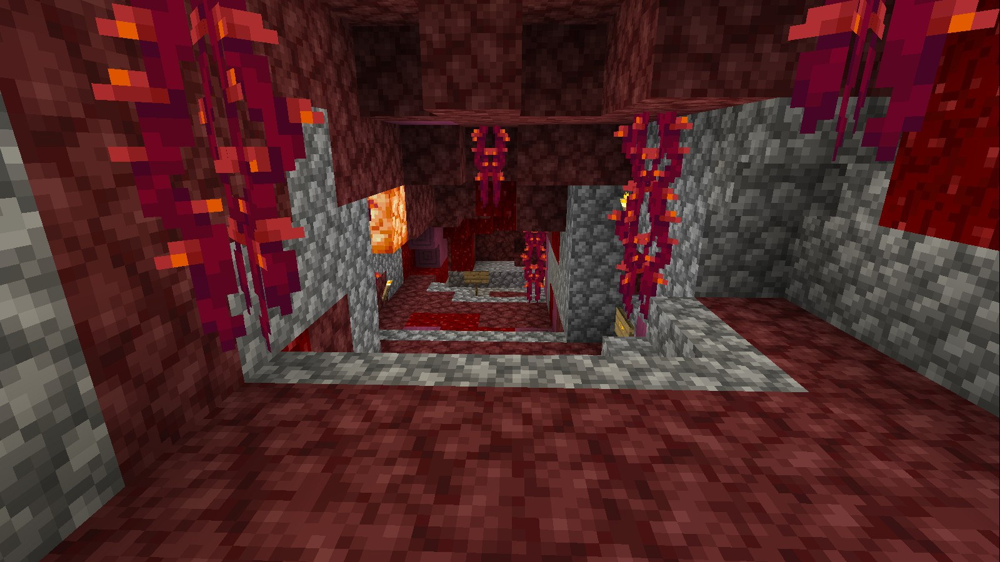
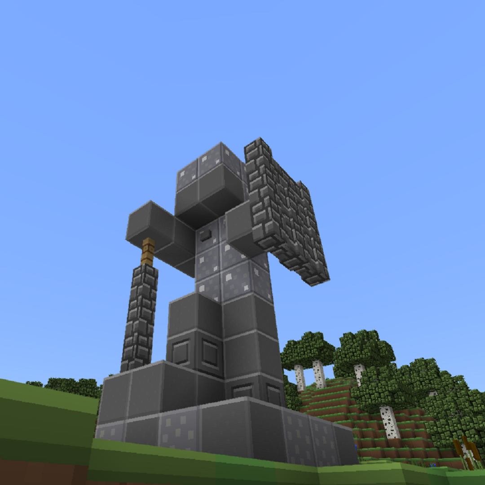

Heroes of the Craft
Website Made by Thbop
Newz:
WE HAVE RESET THE SERVER!!!!
Now we are on Heroes of the Craft Season 2!!!!
Yes, sorry all your builds are no longer apart of the realm,
but there is still a way to see them again.
(Read to the end to find out how.)
So why aren't we resetting when 1.17 comes out?
Good question! There wasn't much activity on the
realm before so we decided to shake things up a bit,
everyone starts fresh.
Now what will happen when 1.17 comes out?
We will reset the over world so that we can get
those majestic mountains and spooky caves.
So it is a great idea to build nether bases.
-Da Wasabi

Players
Thbop
Fuzzyboy85
Note: These aren't the only players, they're just the only ones that made a page for themselves.
Heroes of the Craft
A Minecraft Realm.
